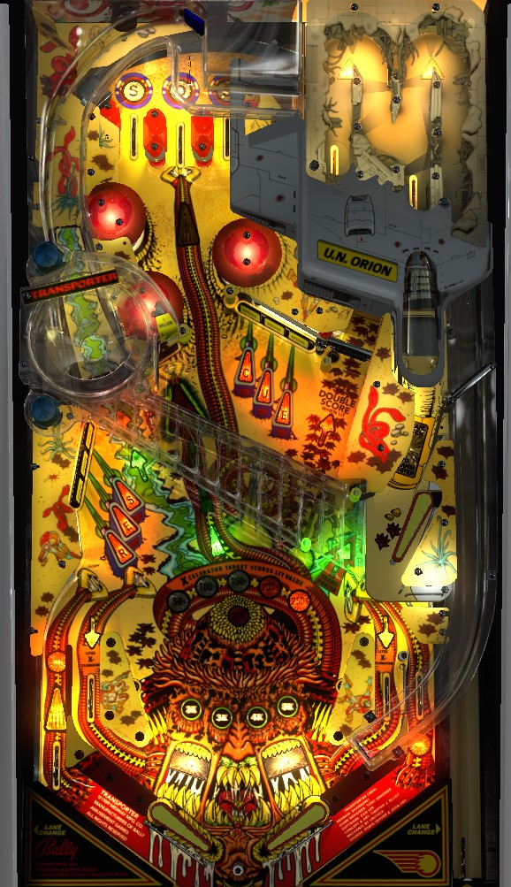

To play for multiball and the progressive jackpot: complete the Rescue drop targets to light the left ramp for a lock. Do this twice to lock two balls. Shoot the Transporter to start multiball- the Transporter is a scoop hidden underneath the upper right flipper pointed to by a green arrow labelled "To Transporter" on the playfield. During multiball, complete Rescue in order to score jackpot and shoot the left ramp to light the out lane special.
To play for Xcelerator Millions: shoot the left ramp once to light the big red X target for a Transport value, then shoot the Transporter underneath the upper right flipper. As the ball comes down, whack it across the clear bridge into the whirlpool, where each spin advances the Transport value. Repeat this process until you hear "Beam me up, Bally", indicating that the X target is worth 1,000,000 points for about 10 seconds.
Top lanes score 20,000 points and spell S-O-S. Roll through an unlit lane to light it. By default, lane change is available at the flipper buttons, and both flippers will rotate the lit lanes in the same direction (left to right). However, an operator setting can disable the lane change function outright.
Completing S-O-S advances the bonus multiplier one at a time up to its maximum of 5x. Completing S-O-S an additional time after reaching 5x lights the center top lane for extra ball, which cannot be moved with lane change. To reaccess the top lanes during gameplay, shoot directly into the bumper area with the lower right flipper, or shoot the spinner lane with the left flipper.
As a consolation for short play times on balls 1 and 2, the center top lane may be lit for extra ball for free at the start of ball 3.
Transport Value is big value collectable at the big red target with a black X on it, just left of center on the playfield. Shooting the left ramp lights this target to collect Transport Value. There are two ways to build the Transport Value:
The current Transport Value is shown on the backglass, in the large red upside down V. The sequence is 10,000 - 20,000 - 30,000 - 40,000 - 50,000 - 60,000 - 70,000 - 80,000 - 90,000 - 100,000 - 200,000 - 300,000 - 400,000 - 500,000 - 1,000,000. When the target value is maxed at 1,000,000, a voice can be heard saying "Beam me up, Bally". Every 10 seconds that pass without collecting the Transport Value will cause the value to decrease by one step. Collecting any Transport Value from this target will unlight it, with another left ramp shot required to relight it.
Hit a flashing Rescue drop target to light it solidly. Light all 6 drop targets to light the left ramp for a lock. In addition to lighting a lock, completing Rescue also scores 50,000 points On easy settings, which are the default, going through any in lane can spot the letters R, E, and S for you. Shoot the left ramp when lit to lock a ball in the U.S. Orion. Repeat the process to lock a second ball. When two balls are locked, shoot the Transporter in the lower right underneath the upper right flipper to start multiball. Completing the Rescue targets additional times when 2 balls are already locked will increase the value of all future Rescue completions by 50,000 points, with no limit I have ever encountered.
To start multiball, all 3 balls will be fed to the upper flipper, where they can be shot across the playfield to build Transport value. During multiball, playfield scoring is doubled or tripled if there are 2 or 3 balls in play, but I'm not sure exactly what the playfield multiplier applies to- it doesn't seem possible to get a 3,000,000 points Transport Value collect or Jackpot, for example.
To score the jackpot, complete the Rescue targets in order during multiball. The jackpot is a progressive jackpot that starts at 500,000 points, grows each time a multiball is played that does not collect the jackpot, can go as high as 4,000,000 points, and carries over across balls, players, and games until collected. I am not sure what the jackpot is set to in a competition to be equal across all players; this likely needs a fanmade alternate ruleset to be possible. Making the left ramp at any time during multiball lights the out lanes alternately for special.
In lanes score 5,000 points. One of the two in lanes will be lit at a time. Slingshots alternate which one is lit. Lit in lanes advance the Xcelerator Value, which is collected at the same X target as the Transporter Value. The target scores 5,000 points if not lit for Xcelerator Value or Transport Value; the first lit in lane increases the Xcelerator to 50,000 points, and each subsequent lit in lane increases the value by 50,000, up to a maximum of 250,000 points. The X target can be lit for both an Xcelerator Value and a Transport Value at the same time, and both will be collected if the target is hit.
Transporter the Rescue has a conventional in/out lane setup. In lanes score 5,000 points and are alternately lit to advance the Xcelerator value. Out lanes score 20,000 points and are alternately lit for special once the left ramp has been made during multiball at least once.
Bonus is advanced 1,000 points at a time with most lanes and targets- I don't know the exact calculation. Max base bonus is likely 100,000 or 200,000 points, but most balls fall well short of these marks. Bonus tends to be very minimal compared to the rest of the game's scoring. Completing the S-O-S top lanes advances the bonus multiplier towards its maximum of 5x. There is no holdover for the base bonus or the multiplier, and there is no mid-ball bonus collect.
In competition/novelty play, Specials score 100,000 points. I am not aware of a setting that can assign a point value to extra balls.
The top lane extra ball can be set to turn on when the bonus multiplier reaches 4x, 5x, one completion of S-O-S after 5x, or two completions of S-O-S after 5x.
Flipper lane change for the S-O-S top lanes can be entirely disabled.
By default, the left kickback is on at the start of each ball. This can be disabled, leaving off at the start of each ball. There is no "on at start of game with memory" option, or similar, for this setting.
The time it takes for the Transport Value to decrease one step can be set to 10 or 15 seconds. Supposedly, the more Transport Values are collected, the further the value ticks down, but I do not have empirical proof of this.
The spinner can score anywhere from 1,000 to 9,000 points per spin. Recommended settings are 3,000 on conservative and 5,000 on liberal.
When a multiball ends, the jackpot is increased by X points, if it was not collected during that multiball. X can be any multiple of 1,000 from 1,000 to 99,000 points. Recommended settings are 5,000 on conservative and 10,000 on liberal.